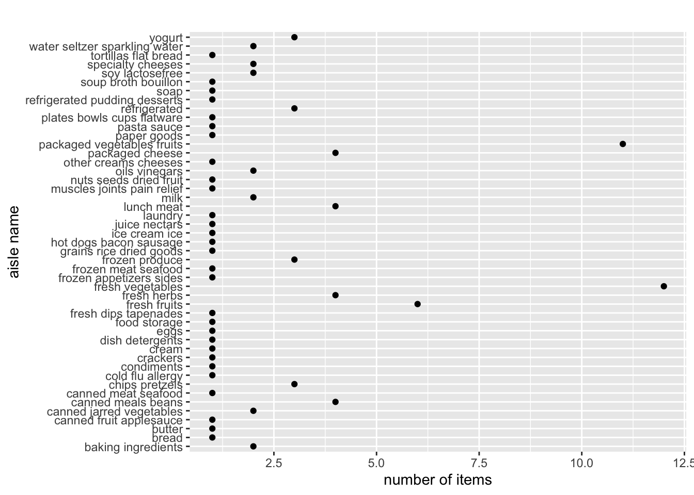

data("instacart")
instacart =
instacart %>%
slice(1:100) # select only 100 rowsinstacart %>%
count(aisle, name = "n_obs") %>%
ggplot(aes(x = aisle, y = n_obs))+
geom_point() +
coord_flip() +
ggtitle("") +
xlab("aisle name") + ylab("number of items")
instacart %>%
count(department) %>%
mutate(department = fct_reorder(department, n)) %>%
plot_ly(x = ~department, y = ~n, color = ~department, type = "bar", colors = "viridis")instacart %>%
mutate(department = fct_reorder(department, order_hour_of_day)) %>%
plot_ly(y = ~order_hour_of_day, color = ~department, type = "box", colors = "viridis")